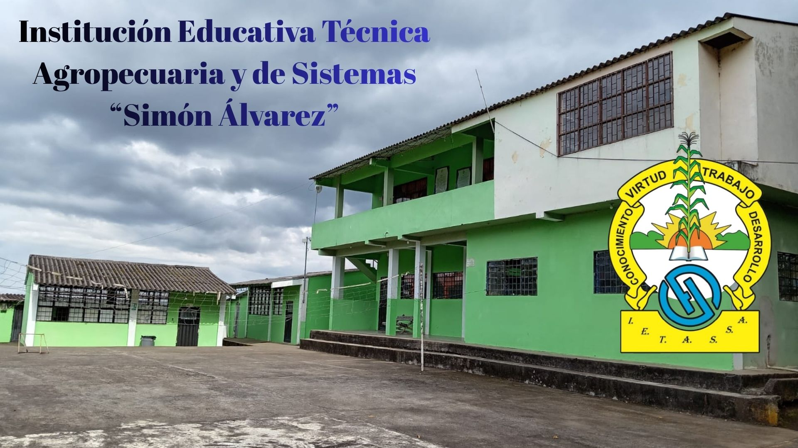

Institución Educativa Técnica Agropecuaria y de Sistemas “Simón Álvarez”
Samaniego - Nariño | ietassa.edu.co
Samaniego - Nariño | ietassa.edu.co

Elecciones estudiantiles fortalecieron el liderazgo y la participación...
La Institución vivió una jornada democrática donde se eligieron los representantes estudiantiles, promoviendo valores de liderazgo y participación activa.

Se realizó la toma de juramento del personero y contralora...
En un acto institucional se llevó a cabo la posesión oficial de los representantes estudiantiles, fortaleciendo la democracia escolar.